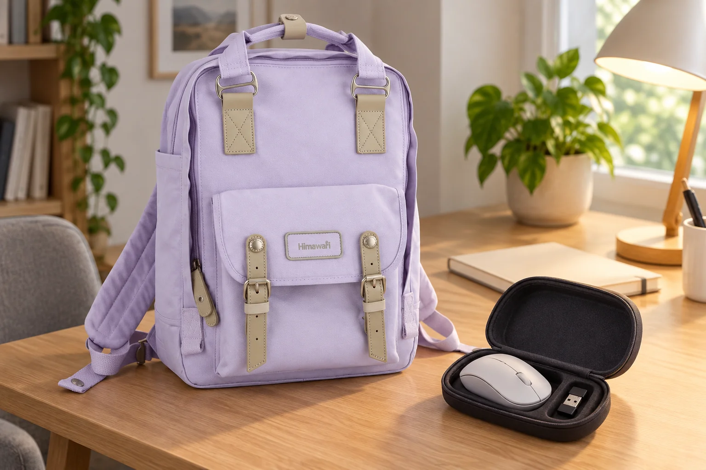
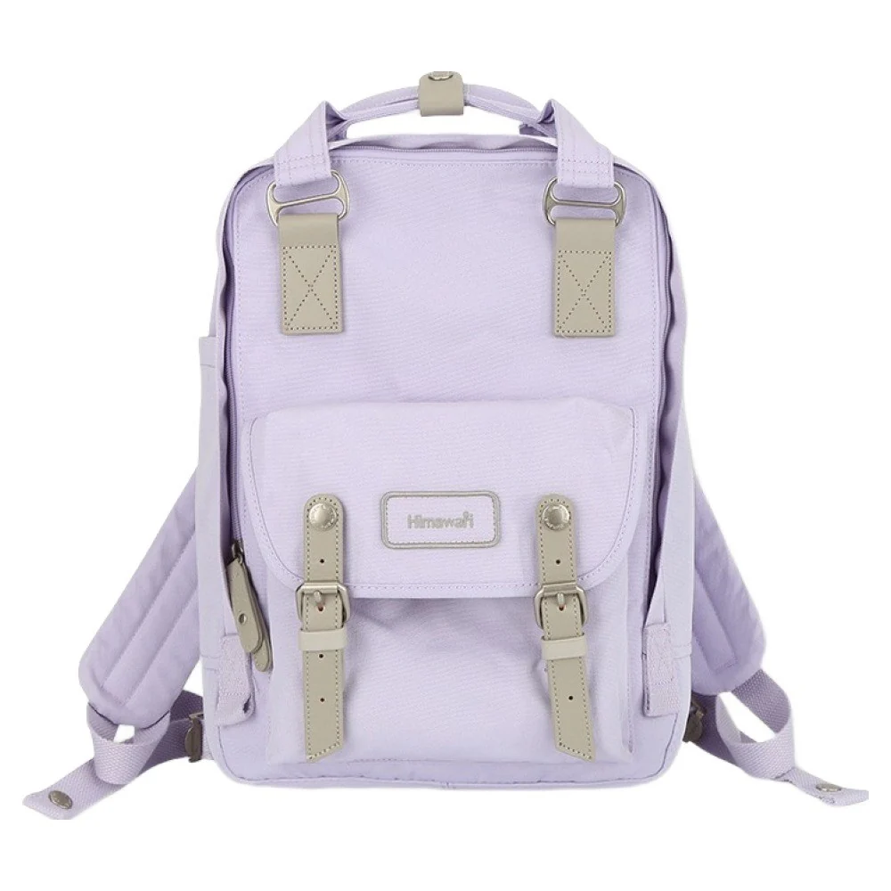

마우스 케이스는 백팩에서 기기와 따로 꺼낼 수 있게

노트북과 마우스는 책상에서 함께 쓰지만 가방 안에서는 모양이 다릅니다. 커버를 닫은 노트북은 넓고 얇고, 마우스 케이스는 손에 쥘 만큼의 두께를 가집니다. 두 물건을 한 파우치에 넣으면 꺼낼 묶음은 줄어들 수 있습니다. 동시에 파우치의 외형과 여밈도 달라집니다. 백팩을 준비할 때는 함께 쓸 도구라는 이유에 더해 실제로 담기는 모양과 이동하는 순서를 비교해볼 수 있습니다.
마우스를 기기 안내에 맞게 정리하고 사용하는 케이스에 넣습니다. 수신기나 분리한 부속품이 있다면 원래 보관 위치를 확인해 같은 묶음으로 둡니다. 백팩에서 비교할 대상은 이 상태로 닫힌 케이스입니다. 책상 위의 마우스 크기만 보고 파우치의 빈틈을 가늠하면 케이스를 더한 뒤 두께가 달라질 수 있습니다. 실제 운반 외형을 먼저 놓아봅니다.
노트북 파우치 하나로 책상에 갈 때
가방을 보관 장소에 두고 노트북과 마우스를 책상으로 옮기는 상황을 생각해봅니다. 두 도구가 한 묶음이면 옮길 수는 적지만, 사용하는 파우치가 그 구성을 담도록 안내되어 있는지 확인해야 합니다. 기기용 공간과 별도 소품 자리가 있는지 보고, 실제 도구를 넣은 뒤 자연스럽게 닫는 동작을 살펴봅니다. 남는 틈이 보인다는 인상만으로 추가 소품의 자리를 정하지 않습니다.
마우스 케이스를 넣어 파우치 한쪽이 불룩해졌다면 어느 부분이 다른 물건과 닿는지 봅니다. 노트북을 꺼낼 때 케이스가 먼저 흘러나오거나 지퍼에 걸리는지도 확인합니다. 가방에서 파우치를 옮기고 그 안의 도구를 꺼내는 두 동작을 이어봅니다. 두 동작이 모두 편해야 함께 담는 선택이 이어집니다.
한 파우치로 이동하기 어렵다면 노트북 파우치와 작은 소품 묶음을 각각 들고 갈 수 있습니다. 이때 백팩에서는 두 묶음을 같은 시점에 잡을 위치로 둡니다. 기기를 꺼낸 뒤 마우스 케이스를 찾느라 다른 파일까지 꺼낼 필요가 없는지 봅니다. 함께 쓰는 물건을 같은 공간에 넣는 방법 외에도, 나란히 접근할 수 있는 위치로 준비하는 방법이 있습니다.
마우스만 꺼내는 날에는 가방의 질문이 달라진다
공용 기기를 쓰거나 마우스만 필요한 일정이라면 노트북 파우치에 합친 구성이 번거로울 수 있습니다. 백팩에서 소품 케이스만 꺼내 사용할 계획이라면 별도 접근을 먼저 봅니다. 큰 파우치의 지퍼를 모두 열어야 하는지, 작은 묶음 하나를 바로 잡을 수 있는지 비교합니다. 자주 반복되는 업무가 어느 쪽인지에 따라 가방 안에서 필요한 위치도 달라집니다.
별도 케이스를 백팩 앞쪽의 작은 공간에 둘 경우에는 깊이와 입구를 실제로 확인합니다. 케이스의 가장 두꺼운 곳이 지나가는지, 닫은 뒤 주변 여밈이 당겨지지 않는지 봅니다. 열쇠와 같은 작은 물건을 추가했을 때 케이스를 잡을 여유가 줄어들 수도 있습니다. 작은 공간을 꽉 채우기보다 소품을 고를 손이 들어갈 자리를 남깁니다.
Himawari No.194L의 카탈로그 외부 크기는 28 × 39 × 15cm입니다. 이 모델을 업무 소품과 함께 쓴다면 기기 파우치와 마우스 케이스를 나란히 놓은 실제 구성으로 비교할 수 있습니다. 외부 치수와 내부 칸의 크기는 구분해서 확인합니다. 기기를 꺼낼 때 케이스가 같이 움직이는지, 마우스만 필요한 날에는 어느 칸을 열지 직접 해보면 필요한 위치가 구체적입니다.

소품 파우치에 충전 도구도 넣는다면 그 묶음 안에서 마우스 케이스를 고를 수 있는지 봅니다. 작은 케이블 밑으로 케이스가 내려가면 파우치를 통째로 비우게 될 수 있습니다. 함께 꺼낼 물건과 따로 쓸 물건의 위치를 나누고, 파우치를 백팩에서 꺼낸 다음 필요한 것만 고르는 흐름을 확인합니다. 파우치의 구분과 백팩의 위치가 서로 이어져야 합니다.
책상에서 되담을 때 정해지는 배치
작업을 마치면 마우스와 부속품을 케이스에 정리한 뒤 백팩으로 옮깁니다. 케이스가 닫힌 다음 어디에 들어가는지 알아야 책상 위의 작은 부품도 회수할 수 있습니다. 수신기가 기기에 남아 있는 상태인지 케이스로 돌아온 상태인지 실제 사용 구성을 확인합니다. 케이스 하나가 가방 안에 있다는 기억보다 오늘 꺼낸 물건들이 제 묶음으로 돌아왔는지가 중요합니다.
회의 중 노트북만 사용하고 마우스는 백팩에 두었던 날이라면 두 묶음의 위치가 유지되었는지 볼 수 있습니다. 파일을 다시 넣으며 케이스가 다른 쪽으로 밀렸다면 다음날에도 그 자리에 있을 것이라고 기대하기 어렵습니다. 되담는 순서에서 기기 파우치가 놓일 면과 소품 케이스의 자리를 정합니다. 새로 받은 자료가 늘어났다면 그 자료의 위치도 함께 조정합니다.
백팩을 바꾸는 날에는 마우스 케이스의 역할을 유지하되 포켓 이름을 그대로 옮기지 않습니다. 이전 가방의 앞주머니가 편했어도 새 가방에서는 입구나 깊이가 다를 수 있습니다. 케이스를 넣고 기기 파우치를 더한 뒤 두 물건을 각각 꺼내봅니다. 어느 쪽을 먼저 넣어야 자연스럽게 닫히는지 알아두면 가방 교체 뒤의 첫 업무에서도 배치를 찾기 쉽습니다.
다음 가방 준비에서 결정이 어렵다면 최근 업무 하루를 떠올려봅니다. 노트북과 마우스를 늘 한 번에 옮겼는지, 둘 가운데 하나만 꺼낸 때가 많았는지 봅니다. 사용 빈도가 낮은 도구를 항상 같은 묶음으로 운반할 이유도 다시 생각할 수 있습니다. 파우치 개수를 줄이는 목표보다 실제로 옮기고 펼치는 동작이 이어지는 구성을 고르면 됩니다.
두 도구를 한 파우치에 담는 선택과 별도 케이스로 나누는 선택은 그날의 사용 방식에서 비교할 수 있습니다. 케이스를 꺼내기 위해 어떤 물건을 움직였는지, 책상에 도착해 손에 몇 묶음이 남았는지 남겨봅니다. 백팩에서 기기와 마우스가 각각 자기 자리를 찾고, 사용 뒤 같은 묶음으로 돌아올 수 있으면 다음 일정에 맞춰 나누거나 합치기도 쉬워집니다.